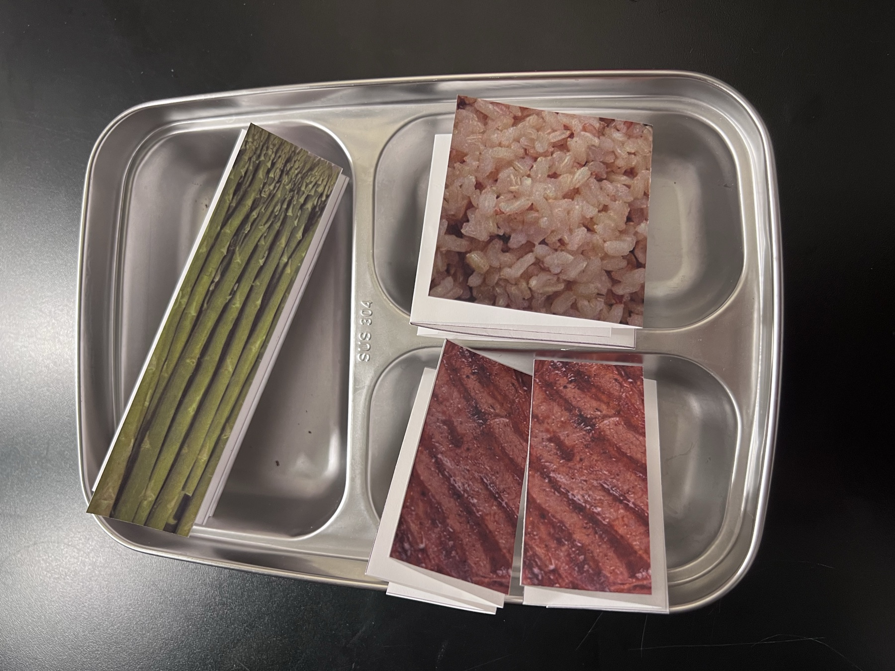
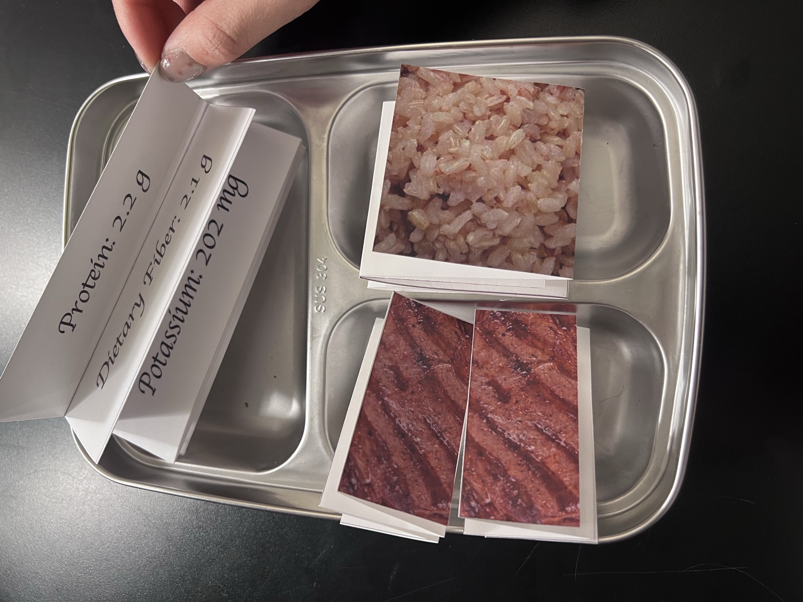
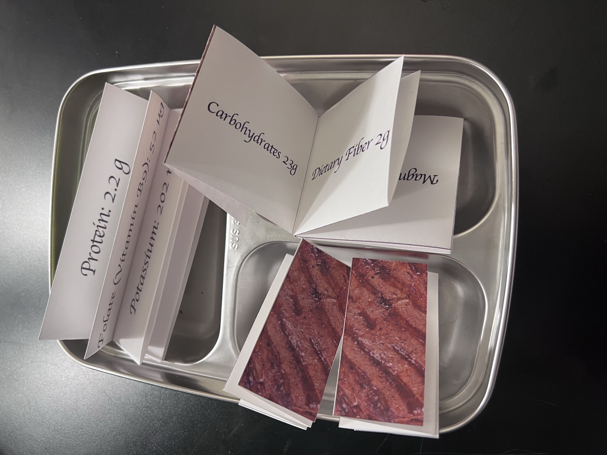
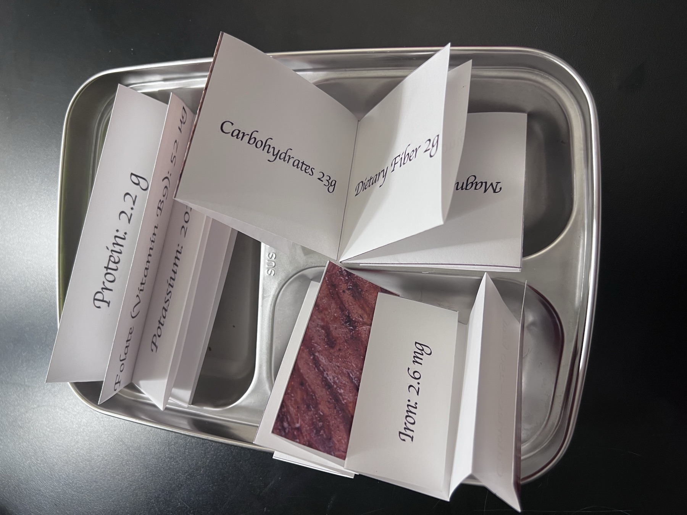
In my first semester of sophomore year I was holding down three campus jobs on top of coursework. A year of eating badly as a freshman had left me noticeably heavier, so I decided to cook for myself whenever I could find the time. As I picked up bits of nutrition science, I began compressing cooking into the smallest window possible and putting my effort instead into buying the most nutrient-dense food I could. Gradually the food stopped looking like food to me and became a combination of nutritional components. While eating I would think: this is protein, this is fiber, this is good fat, I should have more of it. That is where this work came from.
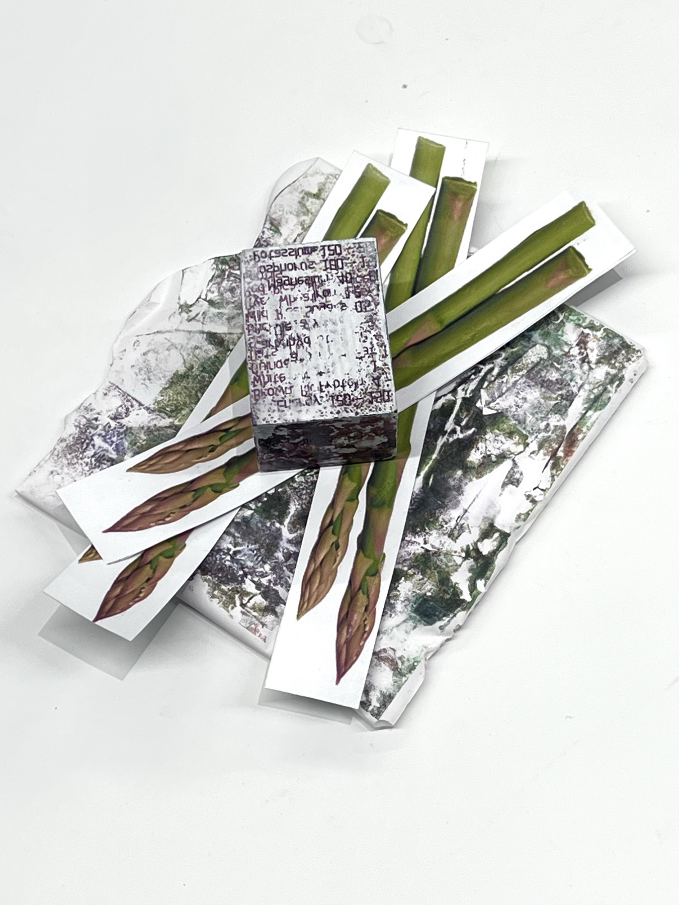
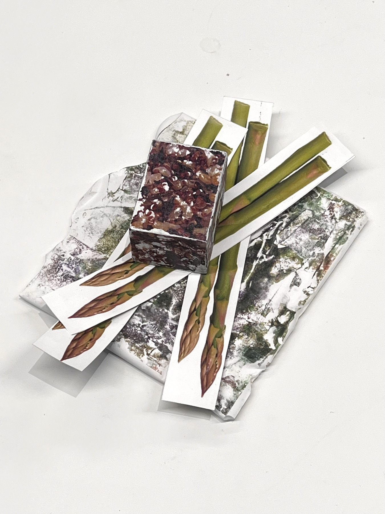
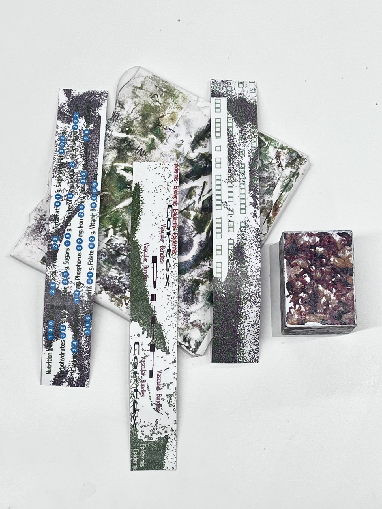
What I find interesting in hindsight is that this way of thinking works like writing signals into a computer — turning a complex world into a language of 0s and 1s, turning complex food into a simple division between nutritious and not. But food is food. It is made of elements, yet it is not a simple unit of them: the combined taste, the way it is prepared, and who you eat it with are all part of its meaning. The way I reduced food reflects the class I belong to, and the way my class interacts with nature. We do not have much time to care about food, but in America eating carelessly makes it easy to gain weight — unhealthy, and out of step with mainstream ideals of beauty. So our attitude toward food becomes streamlined, even programmed. This is the result of many forces at once. I am not an isolated case.
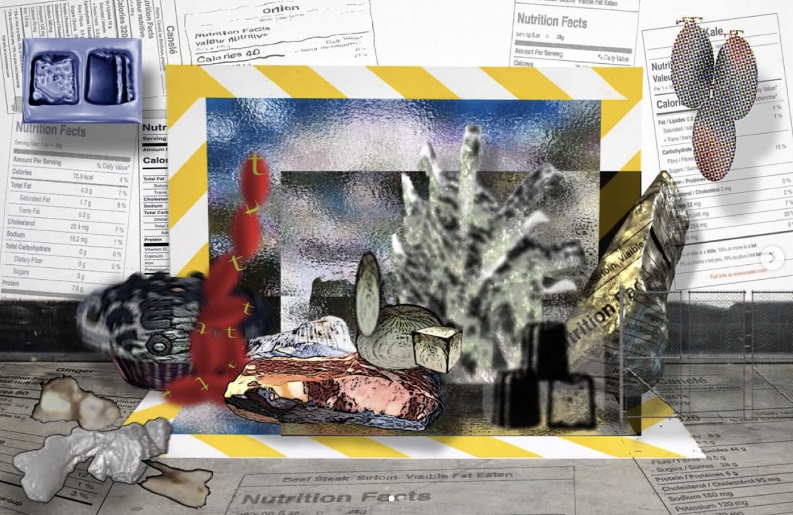
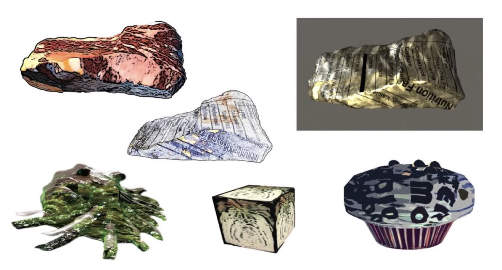
This led me to start wondering which foods were actually necessary. I quit most of my chip- and soda-eating habits — at first purely to save money, since two bags of chips cost about as much as a pack of ground beef. Later, looking at the shelves of snacks in the grocery store, it struck me that these were all foods dreamed up out of pure human imagination, foods that do not exist in nature. That felt genuinely science-fictional. I remembered that as a kid, most of us got more excited about sneaking a snack than about eating an actual meal, even though snacks offer almost no nutritional value to the body — excess sodium, dyes, sugar, and fat, whose real function is to satisfy the tongue and the mind. I am not condemning this. But if I follow the thought further, I realize our taste buds have essentially been domesticated by the snack industry. A chocolate candy I loved a year ago tasted, when I tried it again after half a year of deliberately avoiding snacks, like nothing but artificial flavoring and a lethal amount of sugar.
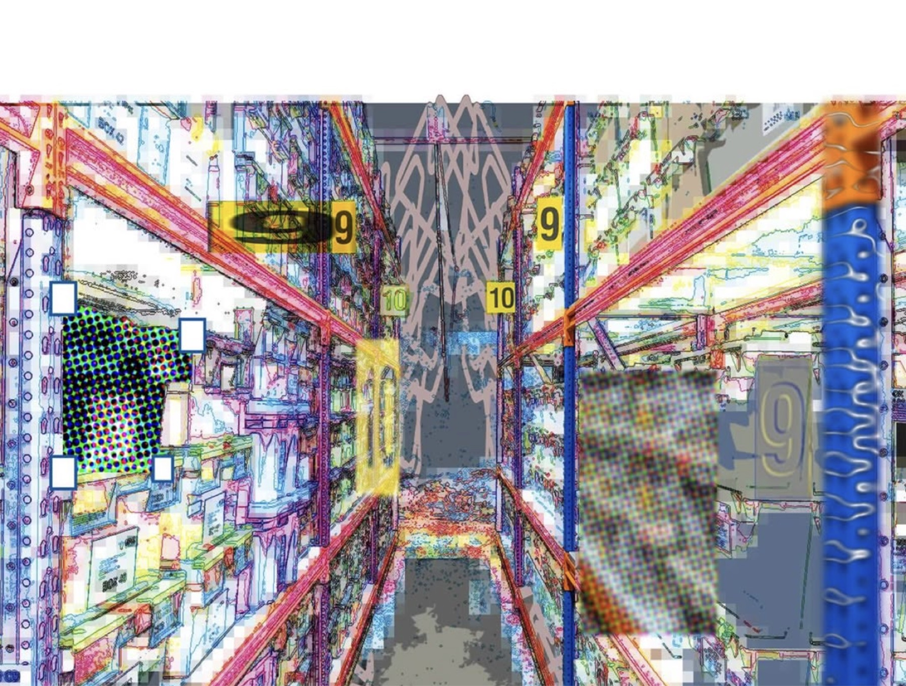
Alongside this piece I built a website about food. You upload a photo of your food, and based on its fat, carbohydrate, fiber, and vitamin C content, along with its food type, the site generates a model of that food. The model speaks to you the way a person would introduce themselves. From that model, users can generate cards with editable fonts, filters, and colors, and save them to a card library.
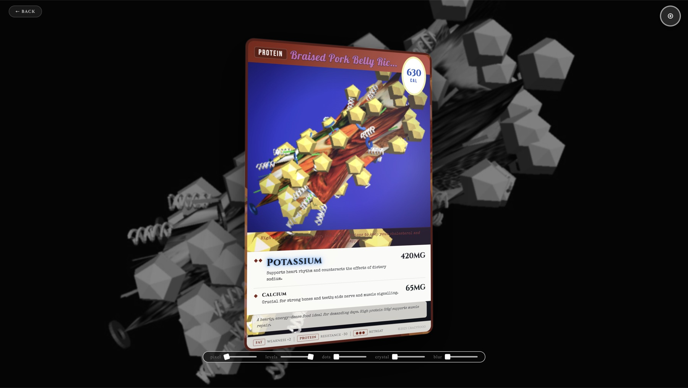
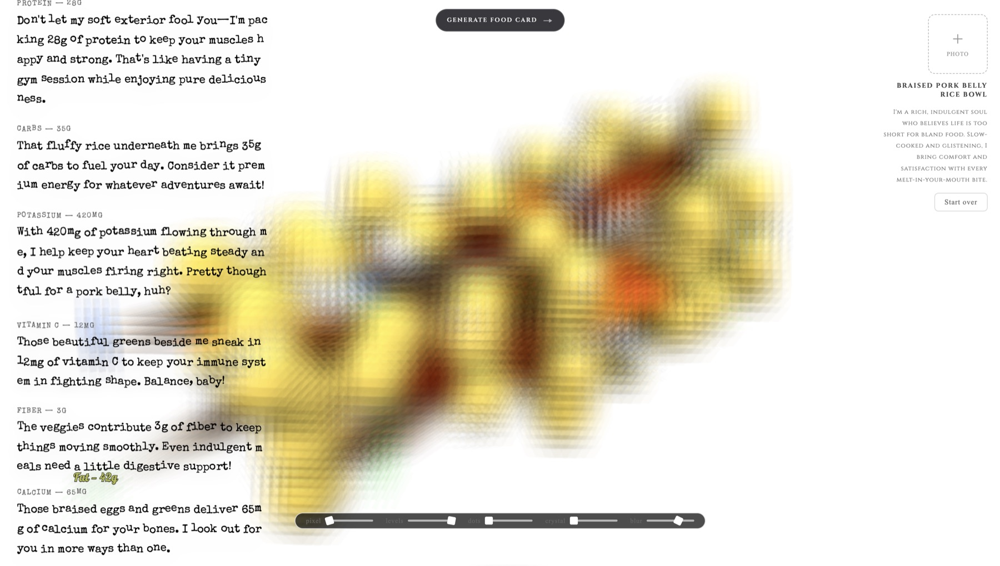